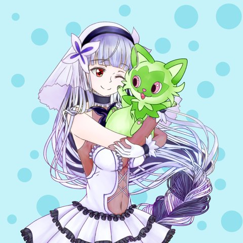

今すぐつらい、消えてしまいたいと感じている方へ
the weed はフォームでの相談のため、お返事までお時間をいただきます。緊急の対応はできません。今すぐ誰かと話したいときは、次の窓口に電話してください。
- よりそいホットライン（24時間・無料）0120-279-338
- いのちの電話（ナビダイヤル）0570-783-556
- こころの健康相談統一ダイヤル0570-064-556
- 命の危険があるとき119（救急）／110（警察）
Philosophy
企業理念
どんな場所からでも、人は伸びていける。
その力を信じ、ひとりひとりの再出発を支えます。
雑草（weed）は、アスファルトのすき間や踏まれる道ばたでも、根を張り、花を咲かせます。わたしたちは、困りごとを抱えた人にも同じ強さがあると考えています。
お金がない、制度がわからない、障碍があるかもしれない。そうした理由で相談をあきらめる人をなくすこと。それが the weed の役目です。
ミッション（使命）
経済的な事情や障碍の有無にかかわらず、誰もが専門的な相談を受けられる場所をつくります。
ビジョン（目指す姿）
「相談できる人がいない」という孤立をなくし、困ったときに頼れる根っこが誰にでもある社会。
バリュー（大切にすること）
否定しないで聴く。わかる言葉で話す。お金を理由に断らない。小さな一歩を一緒に喜ぶ。
Support
サポート内容
-
借金・お金の悩み
借金の返済が苦しい、督促が怖い、生活費が足りない。家計の立て直しや、債務整理など使える方法を一緒に整理します。
くわしく見る → -
モラハラ・家庭の問題
パートナーや家族からの暴言、無視、お金の制限などのモラハラ。夫婦・親子の関係や、家を出たいときの相談も受け付けます。
くわしく見る → -
パワハラ・職場の悩み
上司からの暴言や過大な要求、職場いじめ、残業代の未払いなど。労働基準の知識をもとに、記録の取り方や相談先、対処の手順をお伝えします。
くわしく見る → -
就職・仕事探し
就職や転職、障碍がある方の働き方、仕事が続かない悩み。自分に合う働き方を一緒に考えます。
くわしく見る → -
制度・手続き
生活保護、障碍者手帳、障害年金、給付金など。使える制度の調べ方と申請の手順をわかりやすく説明します。
-
生きるのがつらいとき
「死にたい」「消えたい」と感じるほど追いつめられている方も、ひとりで抱えこまずに話してください。今すぐ危ないときは、こちらの窓口へ。
くわしく見る →
どの分野かわからない相談も歓迎します。思っていることをそのままフォームに書いて送ってください。
Flow
ご相談の流れ
-
ご相談無料
Googleフォームから、困っていることを送ってください。うまくまとまっていなくても大丈夫です。
-
回答無料
内容を確認し、担当者から回答をお送りします。ここで解決する場合もあります。
-
コンサルティング有料・条件付き
さらに支援が必要な場合は、スポット相談・月額指導プラン・集中併走プランの中から、内容と料金をご説明し、ご同意いただいてから始めます。
Fee
料金について
Googleフォームでのご相談と、その回答までは無料です。その先は、次の3つのプランからお選びいただけます。
話を聞いてほしい方に
スポット相談
じっくりお話を聞くことに重きを置いた相談です。専門的・技術的なアドバイスは行いません。
定期的に進めたい方に
月額指導プラン
月2回、専門的・技術的な内容をふまえて具体的な進め方をご一緒に考えます。
集中して取り組みたい方に
集中併走プラン
月4回、専門的・技術的な支援を行いながら、解決まで伴走します。
コンサルティング料をすぐにお支払いいただかなくてよい方
次のいずれかにあてはまる方は、コンサルティング料をその場ではいただきません。状況をうかがったうえで、後払いまたは無料のどちらかにいたします。
- 年収が100万円以下の方
- 障碍のある方
- 障碍があるかもしれないと感じている方（診断や手帳がなくても対象です）
後払いにするか無料にするかは、コンサルティングに進む前に個別にご相談して決めます。
Profile
代表プロフィール

矢内 統the weed 代表
ハードからソフトまで扱える技術者
機械や電子機器などのハードウェアから、プログラムやシステムなどのソフトウェアまで、幅広く手がける技術者です。技術の仕事に加えて、財務、労働基準、土地に関わる仕事にも携わってきました。
自身も障碍のある当事者です。制度のわかりにくさや、相談先が見つからない心細さを自分ごととして知っています。だからこそ、困ったときに最初に頼れる場所をつくりたいと考え、the weed を立ち上げました。
- ハードウェア
- ソフトウェア
- 財務
- 労働基準
- 土地
- 障碍の当事者
Circle
サークルメンバー募集
好きなことを、一緒にやりましょう。
the weed では、一次創作の仲間を募集しています。ゲームや小説など、オリジナル作品を作りたい方、作っている方を歓迎します。
絵、文章、音楽、プログラムなど、得意なことや好きなことを持ち寄って、自分たちの作品を形にしていきましょう。
いまは相談フォームと共通です。「ご相談の内容」に「サークル参加希望」と書いて送ってください。